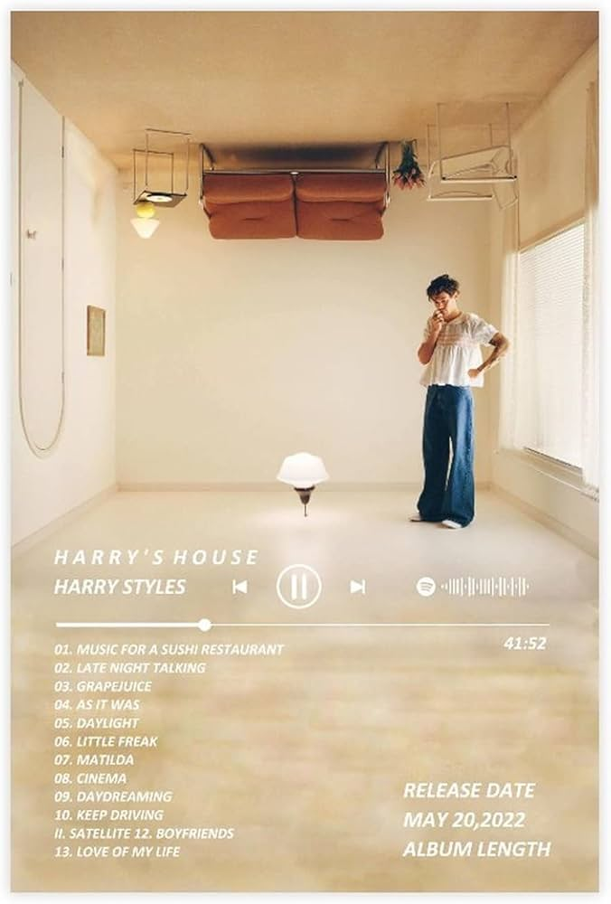

Harry's House
Influências: O álbum "Harry's House" foi inspirado principalmente por sonoridades dos anos 70 e experiências pessoais.
Faixas
- As It Was
- Late Night Talking
- Grapejuice
- Daylight
- Little Freak
- Matilda


Influências: O álbum "Harry's House" foi inspirado principalmente por sonoridades dos anos 70 e experiências pessoais.